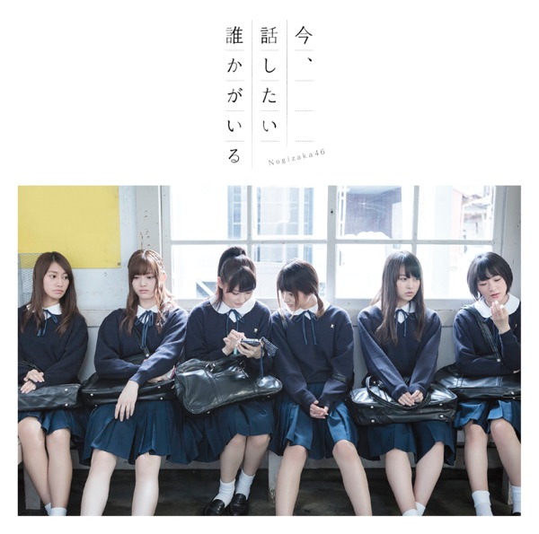

サカミチ
サカミチポピパッパパーぽぴぱっぱぱー

初収録リリース「今、話したい誰かがいる」のジャケット
歌唱メンバー（16名）
秋元真夏、生田絵梨花、生駒里奈、伊藤万理華、井上小百合、衛藤美彩、齋藤飛鳥、桜井玲香、白石麻衣、高山一実、西野七瀬、橋本奈々未、深川麻衣、星野みなみ、松村沙友理、若月佑美
この曲が披露されたライブ（37件）
新しい順に20件まで表示しています（全37件）。
同じリリースの曲
今、話したい誰かがいる、嫉妬の権利、ポピパッパパー、大人への近道、悲しみの忘れ方、隙間

初収録リリース「今、話したい誰かがいる」のジャケット
秋元真夏、生田絵梨花、生駒里奈、伊藤万理華、井上小百合、衛藤美彩、齋藤飛鳥、桜井玲香、白石麻衣、高山一実、西野七瀬、橋本奈々未、深川麻衣、星野みなみ、松村沙友理、若月佑美
新しい順に20件まで表示しています（全37件）。
今、話したい誰かがいる、嫉妬の権利、ポピパッパパー、大人への近道、悲しみの忘れ方、隙間